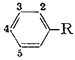

HTML by Rhodium
In recent years the study of the volatile components of natural products has been enormously extended by the development of the techniques of gas�liquid chromatography, The detection, isolation, and identification of unsuspected minor components, either in the lower boiling (terpenaceous) or higher boiling (aromatic) fractions of essential oils, has provided both taxonomic assignment and insight into plausible biogenetic pathways.
This latter fraction, that which is made up to a large extent of phenols and their ethers, has always proved difficult to analyze for numerous reasons, Most of the known components are oils at ordinary temperature, thus distillation cuts rarely crystallize. If there is any complexity in the natural mixture, a continuous temperature increase is observed during distillation even with the use of efficient fractionation equipment, Secondly, there is a consistent similarity in the substitution groups present; the ether groups are invariably methoxys or methylenedioxys, and the aliphatic chain is usually found to be allyl, cis-propenenyl, or trans-propenyl. Attempts at differential extraction or partition within these distillation cuts have been generally unsuccessful.
A third difficulty, related to the absence of functional groups mentioned above, is the variability and inconsistency of general methods employed in the preparation of characterizing derivatives. Oxidation of the olefinic side chain with KMnO4 can lead to the corresponding benzaldehyde or benzoic acid with the loss of two carbon atoms, the formation of a phenylacetaldehyde with the loss of only one carbon atom, or the generation of a glycol, with the loss of none. Frequently several of these possibilities occur concurrently to yield mixtures. Picrates are often employed, but these can be unstable (anethole) or may not form at all (croweacin). The reaction with bromine is perhaps the most generally employed procedure, but here, too, the reactions can be anomalous, Reaction products may contain from one up to five atoms of bromine, some of the pure ethers show two and even three individual bromination products depending upon conditions employed (isoapiole), and there can be unexpected side reactions (tribromination of isocroweacin simultaneous with the loss of the entire propenyl chain).
There are approximately twenty aromatic ethers known to be natural components of the essential oils of plants, In each of these there is an olefinic side chain which is either an allyl, a cis-, or a trans-propenyl group, and an ether substitution comprising one or more methoxyl groups and not uncommonly a methylenedioxy heterocycle, As most of these natural products carry trivial names that reflect botanical origins rather than chemical structure, their position in relationship to one another has been presented in the form of a grid (Table I). Here the specific type and position of ether substitution is listed on the ordinate, and each of the possible olefin groups heads a separate column. The above-mentioned trivial names are inserted appropriately, The remaining positions of the grid (indicated by dots) represent closely related chemicals, and all of these substances (for a total of thirty separate materials, the croweacin group aside) have been employed in this present study. Some of these entries are from natural isolates, some are from commercial sources, and many have been synthesized. These origins are also tabulated in Table I.
Trivial Names and Sources of Materials in This Study

Aromaticsubstitution |
-CH2CH=CH2 (a) |
(cis) -CH=CHCH3 (b) |
(trans) -CH=CHCH3 (c) |
|
I |
4-OCH3 |
Estragole1,* |
�2 |
Anethole1 |
II |
2,4-(OCH3)2 |
�3,4 |
Nothosmyrnol3 |
� |
III |
3,4-(OCH3)2 |
Methyleugenol5 |
� |
Methylisoeugenol5 |
IV |
3,4-OCH2O |
Safrole5 |
α-Isosafrole |
β-Isosafrole5 |
V |
3,4,5-(OCH3)3 |
Elemicin3 |
� |
Isoelemicin3 |
VI |
3-OCH3-4,5-OCH2O |
Myristicin6 |
� |
Isomyristicin6 |
VII |
2,4,5-(OCH3)3 |
�3 |
β-Asarone6 |
Asarone6 |
VIII |
2-OCH3-3,4-OCH2O |
Croweacin | � | � |
IX |
2,3,4,5-(OCH3)4 |
�3,4 |
� | �3 |
X |
2,5-(OCH3)2-3,4-OCH2O |
Apiole6 |
� |
Isoapiole6 |
XI |
2,3-(OCH3)2-4,5-OCH2O |
Dillapiole3 |
� |
Isodillapiole3 |
* Sources: 1. Aldrich Chemical Co.; 2. except where specifically noted, all cis-isomers were obtained by preparative GLC separation of isomerization mixtures involving the trans-counterparts; 3. synthetic, see Experimental; 4. these substances, from natural sources, have always been referred to by chemical names, 2,4-dimethoxyallylbenzene and 2,3,4,5-tetramethoxyallylbenzene respectively; 5. Matheson, Coleman and Bell; 6. isolated from natural sources, see Experimental.
The one natural oil that has been omitted is croweacin, or 2-methoxy-3,4-methylenedioxyallylbenzene. In its one reported synthesis1, only a mixture of isomers was obtained. A separate synthetic approach, paralleling the reported conversion2 of piperonal to safrole (eqn. 1), would allow croweacin to be prepared from the readily available 2-methoxy-3,4-methylenedioxybenzaldehyde.
This route was abandoned when, through the use of the analytical procedures elaborated upon in this report, no suggestion of safrole could be obtained from the above procedure involving piperonal, The substances indicated by the footnote 6 in Table I were all obtained either directly or indirectly from plant extractsa. The distillation of Oil of Parsley Seed (lingerer & Co.) through a 30 tray, 1 in, Oldershaw column gave substantially two flats after the initial removal of the terpenaceous fraction by stripping, The first of these, b.p. 154-7�C/15 mm, was 87% myristicin (VIa), This was employed in preference to the material obtained from Oil of Nutmeg3, as here there is no indication of contamination with the chromatographically similar analog elemicin. The second fraction, b.p. 173-178�C/15 mm, was substantially pure (97%) apiole (Xa), The cuts removed in between myristicin and apiole were to a large extent 2,3,4,5-tetramethoxyallylbenzene, It was not obtained in amount or in purity sufficient for this chromatographic analysis, but it confirmed (by infrared) the identity of the synthetic substance prepared below. These distillation cuts were isomerized with KOH in ethanol, as described below, to provide mixtures of cis- and trans-isomyristicin and of isoapiole respectively.
The distillation of Oil of Calamus provided both cis- and trans-asarone, VIIb and VIIc (30 tray 1 in. Oldershaw, bp 171-172�C/24 mm and 182-192�C/25-27 mm, respectively), The unconjugated isomer of asarone VIIa (2,4,5-trimethoxyallylbenzene) as well as elemicin and the two conjugated isoelemicins (V) were prepared as described elsewhere4.
The two tetraalkoxy materials remaining (tetramethoxyallylbenzene IX and dillapiole XI) were synthesized in accordance to eqn. 2. The peracetic acid oxidation of the trialkoxybenzaldehydes, and the subsequent steps of ether formation and Claisen rearrangement followed the specific directions given for the corresponding conversions with dialkoxybenzaldehydes4.
The synthesis of 2,4-dimethoxyallylbenzene, precursor to nothosmyrnol, was complicated by the formation of isomers (eqn. 3). In the previously reported syntheses5 that employ the Claisen rearrangement of allyl m-methoxyphenyl ether (XII), the product had been assigned the structure that would have resulted had the migration occurred exclusively to the unhindered ortho-position, More recently, the reaction has been shown to occur to both ortho-positions, and indirect (isotope dilution) technique has indicated 2:1 ratio of isomers favoring the unhindered positions. GLC analysis (Apiezon L, 20 ft. column, see below) of both the rearrangement phenol XIII and its methyl ether XIV showed the presence of two components in the ratio of 4:6 in the order of emergence. The earlier (and lesser) phenol was isolated and methylated to provide the earlier (and lesser) dimethoxyallylbenzene. This is the 2,6-dimethoxy isomerb, and the later peak, the 2,4-isomer (IIa), was isolated from the mixture XIV by preparative chromatography to provide the sample employed in isomerization to nothosmyrnolc.
The base-catalyzed isomerizations of each of the allyl-materials into the mixture of cis- and trans-propenyl counterparts were all achieved by the combination of equal weights of allyl isomer, of flaked potassium hydroxide, and of absolute ethanol, This mixture was heated in a steam bath for 24 hours, In the studies below that provide identification of GLC cuts by isomerational analyses, this same ratio of reagents was maintained, only that the unknown fractions were collected directly in small screw cap vials which could be immersed in the steam bath, After the appropriate heating period, the reaction mixture was quenched with water, and extracted with methylene chloride to provide material for reanalysis by GLC. The interpretation of these changes relative to the chain structure is given below,
A Varian Aerograph A-90-P gas chromatograph was used in this study, The columns employed for analysis were (1) SE-30, 5% concentration on 45/60 HMDSW (20 ft, x 3/8 in.); (2) Apiezon L, 5% on 90/100 ABS (5 ft. x 1/4 in.); (3) XE-60, 4% on 90/100 ABS (10 ft. x 1/4 in.). The preparative separations required in the synthesis of 2,4-dimethoxyallylbenzene were conducted on a 20 ft. 3/8 in. diameter column containing Apiezon L on ABS, 20%. For purposes of defining emergence time independent of day to day fluctuations of temperature and gas flow rate, internal standards (anisole and 1,2,3-trimethoxybenzene) were incorporated directly in the sample to be analyzed. Areas of emergent peaks were measured with a disc integrator.
In the published literature there are several descriptions of GLC separations of certain of these isomers. These reports embrace both the aromatic ether isomers described here and their phenolic counterparts8, and all the compounds reported have emerged from their absorption columns in a consistent order; viz., allyl, cis-propenyl, and trans-propenyl.
Table II presents the relative retention times of the material under study in this report, on a variety of chromatographic substrates, and in no instance is this pattern violated, It may thus be stated as an empirical rule, that holds within all assayed oils, that with a constant substitution pattern, the unconjugated isomer (allyl) will be desorbed from an absorption column before its conjugated counterpart (propenyl), and in the latter case, the cis-isomer always precedes the trans-isomer.
Table II
Relative Retention Times of the Essential Oils
Fig. 1
Emergence times (relative to 1,2,3-trimethoxybenzene)
of the essential oils on three separate substrates.
Fig. 2
The expected isomerization patterns from the
base-catalyzed rearrangement of an unknown isolate.
The values in Table II have been determined by the comparison of residence times directly with that of anisole or of 1,2,3-trimethoxybenzene, The interval from injection to emergence was taken as unity. These materials were chosen as they were readily available, and suggested the type of substitution pattern found in the essential oils. The times observed for both the reference material and the experimental substance were determined from the point of injection rather than from the column dead time (air peak). The ratios were thus temperature dependent (as seen in Table II from 3.0 at 130�C to 1.9 at 180�C for SE-30) but appeared to be more consistent.
The dependability of the elution pattern, as well as fine distinctions in the comparative retentive efficacies of the various substrates, are evident from Fig. 1. Here the retention times, relative to 1,2,3-trimethoxybenzene, are plotted logarithmically on the ordinate, and in each instance, the trans-propenyl lies above the cis-propenyl, which in turn lies above the allyl counterpart, The positioning of materials on the abscissa is by the boiling points of the allyl materials, in as far as they have been reported.
Ratio of cis/trans
Isomers (%)
Resulting From the
Base-Catalyzed
Isomerization of
Allylbenzenes
| Compound Isomerized |
Ratio |
| Ia | 3.5 |
| IIa | 6.2 |
| IIIa | 5.8 |
| IVa | 8.0 |
| Va | 11.4 |
| VIa | 8.5 |
| VIIa | 11.5 |
| IXa | 9.9 |
| Xa | 9.0 |
| XIa | 7.9 |
The Apiezon-L column appears to yield a separation, of one family to the next, that most nearly reflects the results that would be expected from high efficiency distillation. The other substrates produce a rearrangement of the order of emergence, but the sampling at hand is too small to establish any meaningful trends.
An effective and general tool can be derived immediately by the combination of this consistency of emergence with the isomerization properties of the allyl group. The base-catalyzed rearrangement of the allyl system to a mixture of the cis- and trans-forms of the propenyl counterpart has been mentioned above. The trans- is always favored, and the ratio of it to the cis- is given in Table III. It has been observed that this same end distribution is approached, although more slowly, by the rearrangement of either pure cis- or pure trans-propenyl material, in accordance with eqn. 4. Thus an unknown component isolated from a mixture may be readily assigned its chain configuration by comparing its time of emergence before and after treatment with alcoholic KOH, Five milligrams has proved to be quite sufficient for this purpose, employing the techniques described in the experiment section. The results of before and after are shown in Fig. 2, which presents the patterns observed with each of the three possible identities. Two complications have appeared and must he guarded against. The rearrangement of a trans-propenyl to the equilibrium mixture of cis- and trans- (the bottom presentation of Fig. 2) can be very slow, a period of several days being necessary to firmly establish the fore-running cis-component, Secondly, the protracted treatment of a methylenedioxy containing compound with alcoholic base leads to slow opening of this ring in accordance with eqn. 5.
These open-chain methylene ethers are quite stable to GLC conditions and represent extremely slowly moving phenolic components in the analysis mixture. Thus in a trial with pure trans-isosafrole (IVc), concurrently with the generation of the cis-isosafrole was the appearance of a very slow moving pair of peaks of approximately equal areas, However, there was sufficient cis-isosafrole formed to permit certain assignment.
The gas-liquid chromatographic behavior of thirty natural etheral essential oils and closely related analogs has been established on a number of different substrates. Within a single substitution pattern, the allyl isomer always precedes the cis-propenyl isomer which, in turn, always precedes the trans-isomer in order of emergence.
Employing this rule, coupled with the manner of isomerization observed by base-catalysis, one can unambiguously assign the structure of the olefinic side chain of an unknown oil.
{kind=link}
{kind=link}
{kind=link}